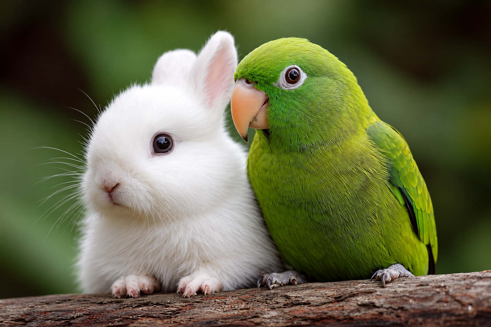

Un sueño que siempre he tenido
Uno de mis sueños ha sido ser médica veterinaria, especialmente para atender loros y conejos. Aunque es un sueño que no he podido cumplir, son animales que me encantan y me gustaría poder ayudarlos cuando están enfermos.
Los loros son mis favoritos por su inteligencia, sus colores, su personalidad y su capacidad de imitar sonidos y comunicarse. Incluso me gustan el aroma y la textura de sus plumas. Los conejos también me encantan por lo suaves y tranquilos que son.
Me gustaría dedicarme a cuidar su salud y promover el bienestar animal. Me causa mucha impotencia saber que algunos animales sufren por la explotación o el maltrato. Poder ayudarlos sería una gran satisfacción.
| Paso | ¿Qué tendría que hacer? |
|---|---|
| 1 | Estudiar Medicina Veterinaria y Zootecnia. |
| 2 | Aprender sobre la salud y el cuidado de las aves y los conejos. |
| 3 | Realizar prácticas con veterinarios especializados. |
| 4 | Continuar preparándome en medicina de animales exóticos. |
Los loros siempre tendrán un lugar muy especial para mí.

Mi sueño es cuidar y proteger a los animales que tanto amo.